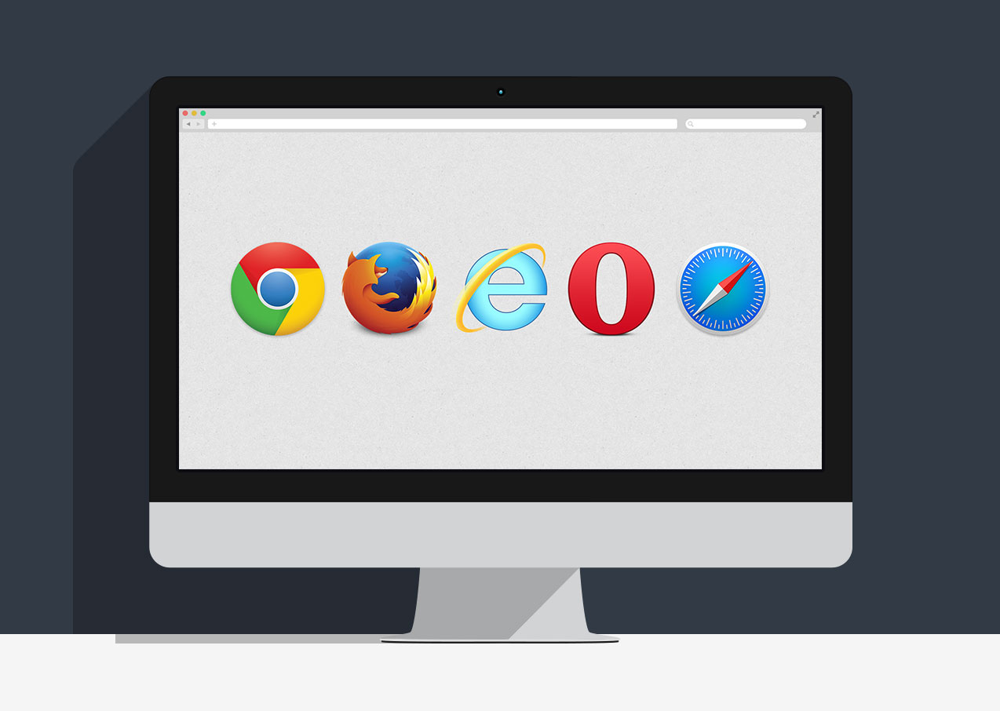

Введение
Web-технологии - комплекс технических, коммуникационных, программных методов решения задач организации совместной деятельности пользователей с применением сети Интернет. Привлекательность Web-технологий как средства доставки информации во многом определяет универсальный интерфейс между человеком и компьютером. Каждому человеку понятны надписи, заголовки, ссылки, картинки.”
То, что многие люди ошибочно называют «интернет», на самом деле интернетом не является. Если вы думаете что синий ярлычок с буковкой «e» на рабочем столе — это интернет, то вы ошибаетесь. На самом деле эта программа называется «браузер» (browser). На сегодняшний день самыми популярными браузерами для ПК являются «Internet Explorer», «Google Chrome», «Mozilla Firefox» и очень популярная в России и нигде более — «Opera». На компьютерах разработанных компанией Apple преобладает их собственный браузер «Safari», разработанный на том же движке, что и «Google Chrome», под названием «Webkit».
А что же такое тогда интернет? Интернет — это глобальная сеть компьютеров, соединенных между собой теми или иными способами. Как именно компьютеры соединяются мы рассматривать не будем, так как это уже технические детали. Просто представьте себе что-то вроде паутины, где в роли узлов выступают компьютеры, а в роли связующих паутинок — провода.
Это слово знакомо многим, но не все знают что это такое. По сути веб-сервером является компьютер, который соответствующим образом настроен и на котором установлена специальная программа: тоже веб-сервер. На данный момент самыми популярными программами веб-серверами являются «Apache», «nginx» и «IIS» от компании Microsoft.
Веб-сервер определенным образом обрабатывает запросы, поступающие к нему по проводам от остальных компьютеров в сети интернет и посылает им ответы с помощью так называемых «протоколов». Углубляться в протоколы мы так же не будем.
На серверах как раз лежат те самые сайты, по которым мы с вами «ходим». Сайт — это просто набор файлов, программа, которая написана на веб-языках программирования.Клиентом называют программу для взаимодействия с сетью на стороне пользователя. В нашем случае это браузер. Браузер посылает некую информацию (запросы) серверу, а сервер на них отвечает. Так они общаются. Когда вы кликаете по ссылке, то клиент (браузер) посылает запрос серверу, на котором лежит данный сайт. Сервер обрабатывает запрос и посылает в ответ клиенту информацию, которую тот запросил, или возвращает код ошибки, если эта информация по каким-либо причинам не доступна. Например, всем знакомая ошибка 404 (страница не найдена).
Информация, которую воспринимает клиент предоставляется сервером в виде HTML, CSS, JavaScript, а так же различных файлов изображений, шрифтов и видео.